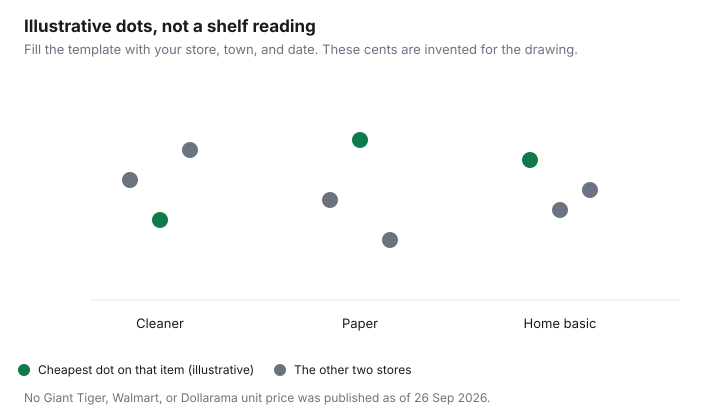

Household Items and Supplies · Canada
Giant Tiger for Household Basics: Where Canada's Discounter Beats Walmart (and Where It Doesn't)

Giant Tiger is not automatically cheaper than Walmart. On 5 November 2026, 10 items had the same brand and the same size at both stores. Walmart's flyer (5 to 11 November, Toronto) was lower on 8, one was a tie, and Giant Tiger was lower on one. The twist is Giant Tiger's Ad Match Guarantee: show a local competitor's current flyer and Giant Tiger sells the identical in-stock item for 1 cent less. Walmart Canada ended its own competitor ad match in October 2020.
The Giant Tiger prices below are gianttiger.com online prices checked 5 November 2026, plus Giant Tiger's weekly flyer (4 to 10 November). Giant Tiger's terms of sale say online prices may not be the same as in its stores, so treat every row as a dated check, not a promise for your town.
A dated household basket that does exist, for Dollarama, Walmart, and Costco, is the three-banner guide. Store-brand swaps are the store-brand guide. How to pull paper and cleaner out of the grocery total is the supplies-bill audit. Grocery banner math, including Walmart as a food flyer, stays on the grocery banner guide.
Key takeaways
- Same brand, same size, same week (5 Nov 2026): Walmart's flyer was lower on 8 of 10 matched items, one tied, and Giant Tiger's own flyer won one (Heinz beans, $1.26 vs $1.44).
- The biggest gaps: Gay Lea butter 454 g $7.47 vs $4.97, Dove 6-bar pack $11.48 vs $8.86, and Sensodyne 135 mL $6.98 vs $4.97.
- Giant Tiger's Ad Match Guarantee beats a local competitor's current flyer price by 1 cent on an identical item in stock. Private-label items, percentage-off deals, multi-buys and online offers are excluded.
- Example: four of those items cost $33.87 at Giant Tiger's online prices and $25.18 ad-matched, $8.69 less, without driving to Walmart.
- Prices change weekly and online prices can differ from your store. Re-check the flyer and the shelf before you go.
Is Giant Tiger cheaper than Walmart this week?
Not on most brand-name basics that line up exactly. Each row below is the same brand and the same package size, checked on 5 November 2026. Walmart prices are from its flyer valid 5 to 11 November 2026 (Toronto). Giant Tiger prices are gianttiger.com online prices that morning unless the row says flyer.
| Item and size | Giant Tiger | Walmart flyer | Gap | Giant Tiger ad-matched |
|---|---|---|---|---|
| Gay Lea butter, salted, 454 g | $7.47 | $4.97 | Walmart $2.50 lower | $4.96 |
| Dove Original beauty bars, 6 × 106 g | $11.48 | $8.86 | Walmart $2.62 lower | $8.85 |
| Sensodyne toothpaste, 135 mL | $6.98 | $4.97 | Walmart $2.01 lower | $4.96 |
| Nescafé Rich instant coffee, 170 g | $7.94 | $6.42 | Walmart $1.52 lower | $6.41 |
| Dawn Ultra EZ-Squeeze dish soap, 443 mL | $3.77 | $2.46 | Walmart $1.31 lower | $2.45 |
| Campbell's condensed soup, 284 mL | $1.46 | $0.97 | Walmart $0.49 lower | $0.96 |
| Dawn Ultra Platinum dish soap, 431 mL | $2.97 | $2.46 | Walmart $0.51 lower | $2.45 |
| Febreze AIR freshener, 230 g | $3.99 | $3.77 | Walmart $0.22 lower | $3.76 |
| Hellmann's Real mayonnaise, 890 mL | $6.47 | $6.47 | Tie | Not needed |
| Heinz beans, 398 mL | $1.26 (flyer) | $1.44 | Giant Tiger $0.18 lower | Not needed |
House brands are a different check. Giant Tiger's flyer had Carver's Choice bacon 375 g at $2.86, and Walmart's flyer had Great Value bacon 375 g at $3.97. That is $1.11 less at Giant Tiger for the same size, but they are not the same brand, and private-label items cannot be ad-matched.
Does Giant Tiger price match Walmart?
Yes, through its Ad Match Guarantee. Giant Tiger's help page says that if a local competitor advertises a lower price on an identical item Giant Tiger carries in store, you show the competitor's current print or digital flyer and Giant Tiger sells it for 1 cent less, approved by the cashier on the spot.
- Identical means identical: same brand, size, pattern and colour. Produce must match the brand or farm, weight and country of origin, and loose per-weight produce is not matched.
- Excluded: clearance, percentage discounts, rebates, combination promotions such as buy 2 get 1, private-label products, online offers, loyalty or member pricing, GT VIP discounts, random discounts, and competitor misprints.
- In stock, local, current: the item must be in stock at that Giant Tiger, the competitor must be in that store's trading area as Giant Tiger defines it, and quantities can be limited.
Walmart Canada works the other way round. It stopped matching competitor grocery ads on 15 October 2020, as our Walmart price-match guide explains. So a Walmart flyer is something to bring to Giant Tiger, not the reverse.
How much does an ad-matched Giant Tiger trip save? (example)
Example: a household needs four of the matched items this week and Giant Tiger is the near store. The prices are the real 5 November figures above. The basket is the example.
| Item | Giant Tiger online price | Ad-matched to Walmart flyer | Saved |
|---|---|---|---|
| Gay Lea butter, 454 g | $7.47 | $4.96 | $2.51 |
| Dove Original beauty bars, 6 × 106 g | $11.48 | $8.85 | $2.63 |
| Sensodyne toothpaste, 135 mL | $6.98 | $4.96 | $2.02 |
| Nescafé Rich instant coffee, 170 g | $7.94 | $6.41 | $1.53 |
| Total | $33.87 | $25.18 | $8.69 |
Ask at the till with the flyer open, one item at a time. If the cashier says no, because the variety is different or the item is out of stock, you are back to comparing the shelf price with the drive.
Giant Tiger's model: everyday low prices, flyers, and limited selection
The homepage as of 26 September 2026 leads with "Low Price is What We Do." It also has a flyers collection and a store selector: "Find and pick up at your local Giant Tiger store," with a state for no store selected yet.
That is a discount banner with a weekly flyer and a chosen store, not a promise that every SKU Walmart carries will be on the shelf. Limited selection is the constraint. If the count on the package or the brand on your list is missing, there is no comparison to win.
This guide does not have a store locator count, so it does not say how many stores sit in Ontario, Quebec, or the Prairies. Density claims need the locator or a dated source. The about page as of the same date did not add a store total. Use the store you can actually reach, and write its town on the sheet.
Household aisles where Giant Tiger often wins
"Often" is the wrong word until you have rows. Cleaner, paper towels, and basic home goods are the aisles people mean, because the packages are small enough to compare and the brands repeat.
In the 5 November check, Giant Tiger won where its own flyer had the item (Heinz beans) and on its house-brand bacon. A lower tag on a smaller bottle can still be a higher price per litre. The supplies audit is the unit-price habit: package price divided by the count on the label, same units on both sides.
Flyers change the answer for a week. Giant Tiger's site exposes a flyers view. Clip only items already on your list, using the same rule as the household flyer guide. A flyer price you did not divide by the count is not a win.
Where Walmart or Costco still beat it on unit price
Walmart Canada's note dated 15 September 2025 says you do not have to wait for a sale, describes Everyday Low Prices as part of the mission, and says Rollback offers bring those prices lower through the year. The same note says a family of four can save more than $450 a year on groceries versus other national chains.
That sentence is about the grocery shop. It is not a household-aisle unit price, and it is not used as one here. Costco's household math, including membership, is on the Dollarama comparison guide. If you are not a member, a Costco tag is not your price.
Large multi-buy sizes are where a big box often wins on paper, and where households lose if the count is not finished. A lower price per sheet that moulds in a closet is not cheaper. Write the count you will use before the next trip, not the count that makes the unit price look best. Store brands that passed a like-for-like check are the other guide. Do not assume Giant Tiger's label and Walmart's label are the same formula because the bottles are the same colour.
Online ordering and pickup options vs driving to a big box
The homepage path this guide could see is pickup at a selected Giant Tiger store. It did not describe a delivery fee, a minimum order, or a promise that every location ships.
Before you drive, select the store and confirm the item is available for pickup there. A big-box trip has its own cost: the time, the fuel, and the extra items that appear because the store is larger. The grocery guide already treats Walmart as a place you price, not as an automatic second stop. The same discipline applies to paper and cleaner.
If pickup stock is wrong when you arrive, the trip failed. Note that on the sheet so you do not plan around a listing that does not match the shelf. This guide does not describe a pickup substitution policy.
A two-store rotation for rural and small-town households
The rotation is the near store plus one farther store, not three logos every week. Giant Tiger can be the near store when it is the one in town.
Walmart or Costco is the stock-up when your sheet shows a unit-price gap on items you will finish. Rural households feel the drive more, which is why the gap has to be written down. A feeling that Giant Tiger is "usually fine" is how a more expensive bottle becomes the habit.
Do the farther trip on a day you are already going, and take only the rows that earned it. If the gap on one bottle is smaller than the detour, buy it at the near store and stop collecting stores. No distance in this guide is a measured saving. Your odometer and your sheet are the measurement.
Price-check template for your nearest stores
One row per item. Same unit on every store: per 100 sheets, per litre, per load, or per item, never a mix.
Leave a cell blank rather than remembering a price. The cheapest store is the lowest unit price on the day you wrote, in the town you wrote. Next month the row can flip. That is the point of the date column.
| Item and package size | Store and town | Date | Price (CAD) | Unit price | Cheapest that day? |
|---|---|---|---|---|---|
| Cleaner, size on the label | |||||
| Paper, sheet count on the label | |||||
| One home basic you actually replace |

Before a rotation trip, check whether Giant Tiger's Ad Match covers the item first. An identical, in-stock item from a local competitor's current flyer can be bought at the near store for 1 cent less, which can remove the reason for the second stop.
Sources
- Giant Tiger, "Ad Match Guarantee," help centre (help.gianttiger.com/en-US/ad-match-guarantee-2376695), read 5 Nov 2026: 1 cent less than a local competitor's advertised price on an identical in-stock item; exclusions as listed above.
- Giant Tiger, "Terms of Sale," help centre, read 5 Nov 2026: online prices may not be the same as in Giant Tiger stores, and the Ad Match does not apply to online prices or web-store orders.
- gianttiger.com product pages, prices checked 5 Nov 2026 about 7 a.m. ET: Gay Lea butter salted 454 g, Dove Original deep moisture bars 6-pack, Sensodyne Fresh Mint 135 mL, Nescafé Rich 170 g, Dawn EZ-Squeeze 443 mL, Campbell's condensed tomato 284 mL, Dawn Ultra Platinum 431 mL, Febreze Air 230 g, Hellmann's Real 890 mL.
- Giant Tiger weekly flyer valid 4–10 Nov 2026 (public Flipp listing, Toronto): Heinz beans or pasta 398 mL $1.26; Carver's Choice bacon 375 g $2.86; "We ad match."
- Walmart Canada flyer valid 5–11 Nov 2026 (public Flipp listing, Toronto M4C): the Walmart prices in the table, each "selected varieties" with the sizes shown.
- Walmart Canada competitor ad match ended 15 Oct 2020: see our Walmart price-match guide and its sources.
- gianttiger.com homepage, as of 26 Sep 2026: "Low Price is What We Do"; flyers; "Find and pick up at your local Giant Tiger store."
- Walmart Canada, "This is not a sale! Everyday Low Prices," 15 Sep 2025, read 26 Sep 2026: Everyday Low Prices and Rollback offers.
Frequently asked questions
Is Giant Tiger cheaper than Walmart for household items?
Not on most matched brand-name basics. On 5 Nov 2026, with the same brand and size, Walmart's flyer (5–11 Nov) was lower on 8 of 10 items, one tied, and Giant Tiger's flyer was lower on Heinz beans ($1.26 vs $1.44). Giant Tiger prices were gianttiger.com online prices, which can differ from stores. Prices change weekly, so re-check before you shop.
What does Giant Tiger usually win on?
In the 5 Nov 2026 check, Giant Tiger won on items in its own weekly flyer, such as Heinz beans 398 mL at $1.26, and on its house-brand bacon (Carver's Choice 375 g $2.86 vs Great Value 375 g $3.97 at Walmart). House brands are not the same product, so compare the size and the label, not the store's reputation.
Does Giant Tiger price match?
Yes. Giant Tiger's Ad Match Guarantee says it will sell an identical in-stock item for 1 cent less than a local competitor's current advertised price when you show the print or digital flyer. Private-label items, percentage discounts, multi-buy promotions, rebates, clearance, online offers and loyalty pricing are excluded. Walmart Canada stopped matching competitor grocery ads on 15 Oct 2020.
Can I order Giant Tiger online for pickup?
The homepage as of 26 Sep 2026 says to find and pick up at your local Giant Tiger store and lets you select a store. That is the pickup path this guide could see. It does not describe a delivery fee, a minimum, or a promise that every store ships. Check the store you selected before you drive.
Is a two-store rotation worth the drive?
Only when the unit-price gap on items you will use is larger than the trip. Write both prices, the package size, and the date. If the second store is a detour for one bottle, the rotation failed. Rural households can keep Giant Tiger as the near store and a Walmart or Costco trip as the stock-up, and no distance in this guide is a measured saving.
Researched and drafted with AI assistance and fact-checked against official Canadian sources. How we create content.